Almacenamiento IP
Temas de ENCO · 7/13
- 1. Formatos de Servidores - Racks y Blades
- 2. Centros de Procesamiento de Datos (CPDs)
- 3. Virtualización de Servidores
- 4. Dispositivos de Almacenamiento
- 5. Subsistemas de Disco
- 6. Fibre Channel y redes SAN
- 7. Almacenamiento IP
- 8. Sistemas de ficheros y almacenamiento en red
- 9. Virtualización del almacenamiento
- 10. Backup
- 11. Backup en red y software para backup
- 12. Archivado de la información
- 13. Hardware para backup
7.1 Por qué almacenamiento sobre IP
En el tema 6 la SAN usaba Fibre Channel, una red dedicada y cara. El almacenamiento IP propone transportar el protocolo de disco (SCSI) por la red de siempre: cable Ethernet y protocolo TCP/IP, con un switch Ethernet entre servidor y discos.
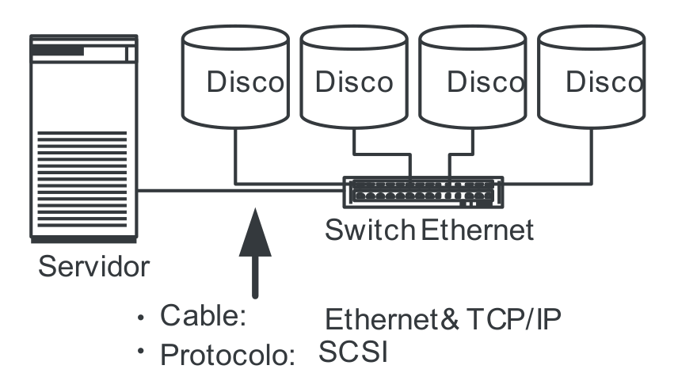
Sus ventajas:
- La tecnología IP está muy extendida y sus componentes son baratos por la competencia.
- No hace falta una red nueva para los datos: se puede usar la LAN existente.
- No hace falta personal formado en FC: basta la formación en IP que ya tienen todos los administradores.
- La red IP no tiene límite de distancia, así que se puede consolidar el almacenamiento entre varias sedes.
Hay tres tipos de almacenamiento IP, todos apoyados en TCP (transporte), IP (red) y Ethernet (enlace y física) del modelo OSI:
- iSCSI (Internet SCSI).
- iFCP (Internet Fibre Channel Protocol, protocolo FC en Internet).
- FCIP (Fibre Channel over IP, FC sobre IP).
7.2 iSCSI
iSCSI transmite el protocolo SCSI sobre TCP/IP. El acceso al disco sigue siendo puramente SCSI, a nivel de bloque y con los comandos de siempre: los extremos SCSI no saben qué red se ha usado. A los datos y comandos SCSI se les añade una cabecera iSCSI, y luego se empaquetan con TCP + IP + Ethernet; en el destino se desempaquetan en orden inverso.
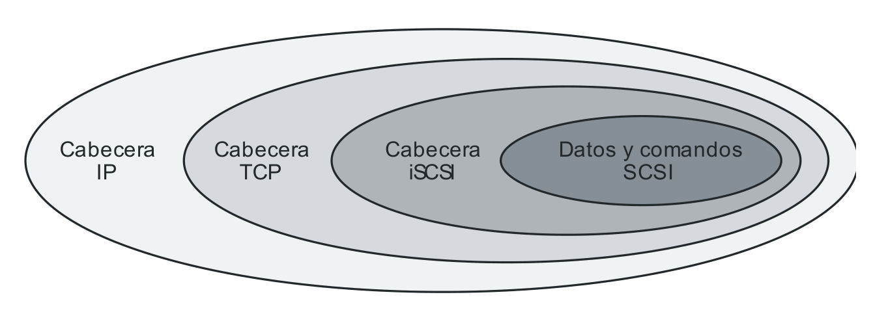
Como muñecas rusas: los datos SCSI van dentro de la cabecera iSCSI, esta dentro de TCP y esta dentro de IP.Puede implementarse de tres formas:
- Por software: un driver iSCSI en el sistema operativo y una NIC normal.
- NIC iSCSI: la tarjeta ayuda, pero la pila TCP/IP se gestiona por software (en la CPU).
- HBA iSCSI: la pila se gestiona por hardware en la tarjeta, liberando la CPU.
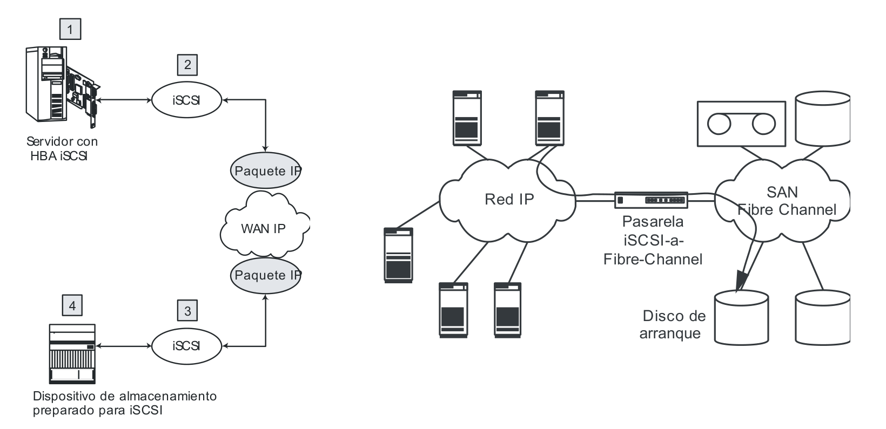
Izquierda: un servidor con HBA iSCSI (1) envía paquetes IP por una WAN (2–3) hasta un almacenamiento preparado para iSCSI (4). Derecha: una pasarela iSCSI-a-Fibre Channel conecta servidores de la red IP con una SAN FC existente (incluso para arrancar desde un disco remoto).Para entenderlo mejor
iSCSI — Wikipedia — conceptos de iniciador, objetivo y LUN (artículo).
7.3 iFCP
iFCP asocia cada dispositivo FC (cada puerto) con una dirección IP. Toda la red es IP, pero los HBA de los equipos son FC, así que los switches de la LAN deben tener puertos FC F o FL para conectarlos. Es un protocolo complejo.
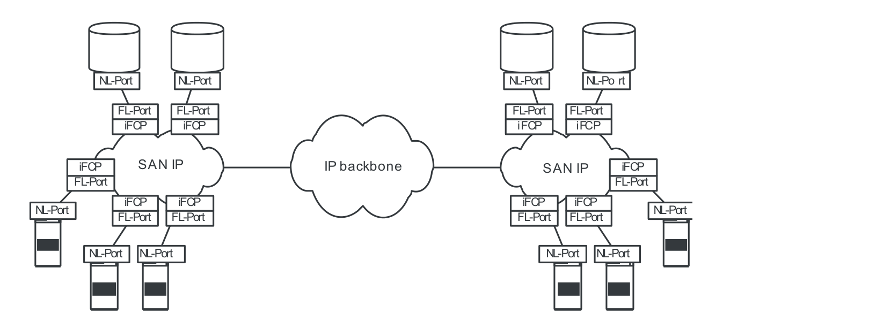
Los dispositivos FC (puertos NL) se enchufan a puertos FL/iFCP de las SAN IP, unidas por un backbone IP.7.4 FCIP
FCIP sirve para conectar dos o más SAN FC distantes mediante una conexión IP: las SAN la ven como un simple enlace punto a punto (un túnel). La codificación es trivial: los frames FCP se encapsulan dentro de paquetes TCP/IP y en el destino se extraen siguiendo el proceso inverso.
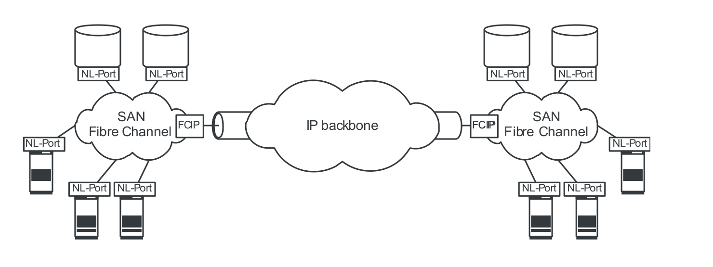
Analogía
FCIP es meter un camión (el frame FC) en un ferry (TCP/IP) para cruzar el mar entre dos islas (SAN). El camión no sabe que ha viajado en barco: sale por el otro lado igual que entró.
7.4.1 Comparativa de los tres
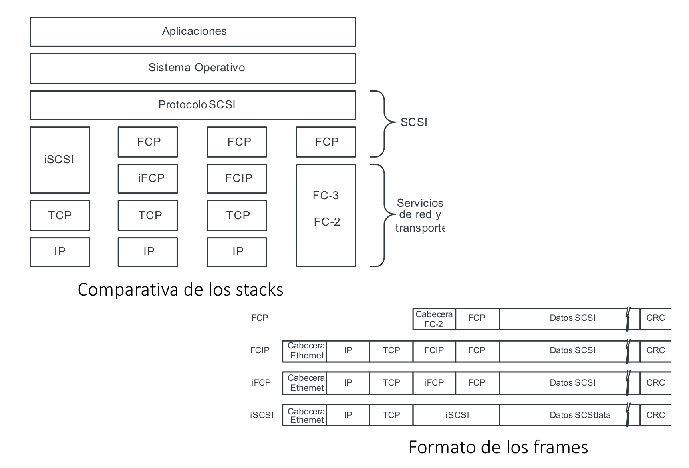
Arriba, las pilas: FCP puro usa FC-3/FC-2; FCIP e iFCP meten FCP sobre TCP/IP; iSCSI va directamente sobre TCP/IP. Abajo, el formato de cada frame.| Dispositivo | Servicios de red | Transporte | |
|---|---|---|---|
| FCP | Fibre Channel | Fibre Channel | Fibre Channel |
| FCIP | Fibre Channel | Fibre Channel | IP/Ethernet |
| iFCP | Fibre Channel | IP/Ethernet | IP/Ethernet |
| iSCSI | IP/Ethernet | IP/Ethernet | IP/Ethernet |
- Solo iSCSI no usa dispositivos FC: es IP de principio a fin.
- FCIP no solo "tuneliza" frames FC: también ofrece servicios de red como el enrutamiento, el servidor de nombres y el zoning sobre TCP/IP.
7.5 Ventajas, desventajas y consideraciones
| Ventajas de usar IP | Desventajas de usar IP |
|---|---|
| Una red común para LAN, MAN, WAN, SAN, voz y vídeo | No es interoperable (no hay estándares totalmente definidos) |
| Tecnología madura | Carga mucho la CPU |
| Personal técnico familiarizado | TCP/IP tiene mucho overhead |
| Sin límite de distancia | La latencia de los switches TCP/IP/Ethernet es muy alta |
| Hardware barato por la competencia | Por las colisiones en Ethernet, solo se aprovecha el 20-30 % del ancho de banda |
| Buenas herramientas de administración |
Consideraciones prácticas, en contra:
- Las LAN existentes pueden estar saturadas y no aguantar además el tráfico de almacenamiento.
- Hará falta formación específica para SAN IP, y las herramientas de administración IP pueden no ser adecuadas.
- IP no es adecuado para aplicaciones críticas sensibles a la latencia.
- Hay problemas de interoperabilidad en iSCSI e iFCP, igual que en FC.
- Solo FC ofrece cut-through routing (reenviar el frame en cuanto se lee la cabecera, sin esperar a recibirlo entero).
Y a favor:
- Existen TOE (TCP Offload Engine) y HBA que aceleran iSCSI descargando la CPU.
- Los routers modernos han minimizado el impacto de las colisiones en Ethernet.
7.5.1 Migración de FC a IP
Se puede migrar poco a poco, uniendo las SAN FC existentes a SAN iSCSI mediante gateways iSCSI. Recomendaciones:
- La LAN existente puede ser suficiente.
- Usar VLANs para asignar ancho de banda.
- Poner una segunda NIC solo para el tráfico de almacenamiento.
- Usar Gigabit Ethernet o superior.
7.5.2 Puntos clave
- iSCSI y FCIP interesan porque reutilizan la red IP, pero el rendimiento no es el mejor.
- iSCSI vale para dispositivos preparados para iSCSI o para SAN conectadas a redes IP.
- Los routers FCIP conectan por IP SAN entre sí o con dispositivos iSCSI.
- Para conexiones remotas (mirroring) pueden usarse IP, ATM o SONET con routers FC-IP.
- No hay que infravalorar la latencia en conexiones largas.
- La velocidad de 10 Gb Ethernet puede ser determinante en un futuro cercano.
Para entenderlo mejor
Storage Area Networks (SAN) Explained: iSCSI, FCoE, Jumbo Frames, FC, and InfiniBand — repaso de las tecnologías de este tema y cómo se comparan (vídeo, 10 min, inglés).
7.6 InfiniBand
InfiniBand (IB) es una tecnología de alta velocidad (y precio) y baja latencia, usada sobre todo como interconexión entre procesos dentro de clústeres de computadores. También se usa para conectar, directamente o mediante switches, servidores con sistemas de almacenamiento y sistemas de almacenamiento entre sí.
Características:
- Bus serie full-dúplex con 250 MB/s efectivos en cada dirección en su versión básica.
- Versiones más rápidas (DDR, QDR, FDR, EDR…) llegan a 25 Gbit/s por link (EDR).
- Los links se agrupan de 1, 4 o 12: hasta 300 Gbit/s (EDR con 12 links). Lo más común es 4X; en supercomputación, 12X.
- Latencia muy baja: menos de 200 ns en los chips, menos de 1,5 µs total y 1 µs con RDMA.
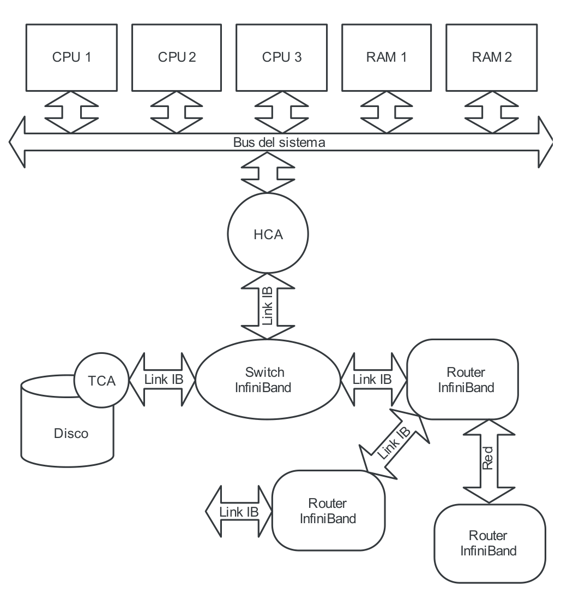
Las CPU y la RAM se conectan al bus del sistema y, mediante un HCA (Host Channel Adapter), a la red InfiniBand; los discos se conectan con un TCA (Target Channel Adapter). Switches y routers IB forman la red.Más del 50 % de los 100 supercomputadores más potentes del mundo usaban IB (TOP500, junio de 2020). En almacenamiento sus ventajas son muy parecidas a las de FC: baja latencia y posibilidad de crear redes. Además, da comunicaciones ultrarrápidas entre CPUs y entre estas y los periféricos (p. ej. el heartbeat de un clúster), y con un bridge InfiniBand–FC puede acceder a una SAN FC.
7.6.1 VIA (Virtual Interface Architecture)
VIA permite un intercambio de datos rápido y eficaz entre aplicaciones de distintos ordenadores. Necesita una red subyacente de baja latencia y baja tasa de error (como InfiniBand).
El problema que resuelve: la comunicación normal entre aplicaciones es complicada y costosa porque los datos se copian una y otra vez en buffers al pasar por el sistema operativo. En VIA, el hardware y la aplicación intercambian datos en un área de memoria común, sin pasar por el SO.
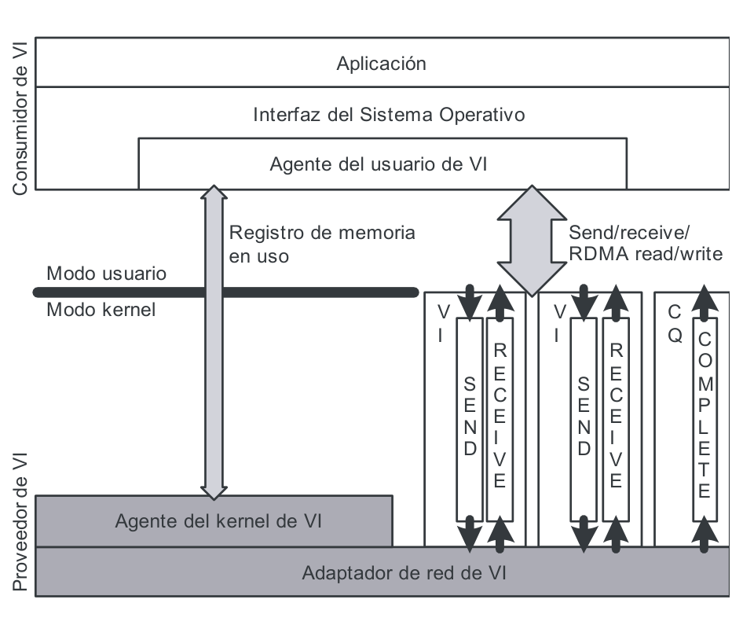
Funcionamiento:
- Dos aplicaciones establecen primero una conexión, la Interfaz Virtual (VI), que define una zona de memoria común en ambos ordenadores donde la aplicación y su NIC intercambian datos.
- Para enviar: la aplicación llena el buffer y avisa a la NIC, que lee los datos de la zona común y los transmite al hardware VI del otro ordenador. El SO del receptor también se evita.
- Las VI son punto a punto: cada una se comunica con exactamente una VI remota.
Hay dos modelos de comunicación:
- Mensajes asíncronos (send/receive).
- RDMA (Remote Direct Memory Access): transmitir grandes cantidades de datos casi sin overhead, dejándolos directamente en la memoria de la aplicación que los va a consumir.
Analogía
Sin VIA, un paquete pasa por la oficina de correos de cada ciudad (el SO), donde lo abren, lo reetiquetan y lo vuelven a cerrar. Con RDMA, el repartidor tiene llave de tu buzón y deja el paquete directamente dentro.
7.6.2 SCSI sobre InfiniBand y RDMA
- RDMA sobre TCP: RDMA usando TCP/IP/Ethernet como transporte, con tarjetas aceleradoras llamadas RNIC.
- SDP (Socket Direct Protocol): mapea la API de sockets TCP/IP sobre RDMA, mejorando todos los protocolos basados en TCP/IP sin cambiarlos.
- iSER (iSCSI Extensions for RDMA): iSCSI sobre RDMA, sin el overhead de TCP/IP.
- SRP (SCSI RDMA Protocol): mapea SCSI directamente sobre RDMA.
7.7 Fibre Channel over Ethernet (FCoE)
Ninguna de las tecnologías anteriores ha conseguido unificar las redes de datos y de almacenamiento (consolidación): lo habitual sigue siendo tener una red LAN, otra de almacenamiento y otra de clúster. FCoE busca migrar el tráfico de almacenamiento de FC a Ethernet: cable Ethernet con DCB (Data Center Bridging, extensiones que evitan pérdidas) y protocolo SCSI + FCP.
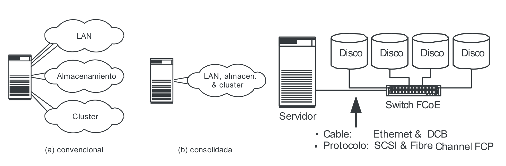
(a) Convencional: un servidor con tres redes (LAN, almacenamiento, clúster). (b) Consolidada: una sola red para todo. Derecha: servidor y discos unidos por un switch FCoE.7.7.1 Ventajas de FCoE sobre 10 Gbit Ethernet
iSCSI bastaría técnicamente para consolidar la E/S, pero los promotores de FCoE señalan dos deficiencias suyas:
- Overhead de TCP: retransmitir paquetes perdidos y reensamblar los que llegan desordenados. FCoE prescinde de TCP.
- iSCSI no es compatible con FC, mientras que FCoE aprovecha la gran inversión ya hecha en SAN FC.
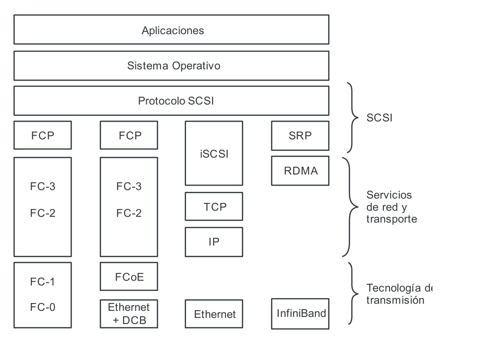
Comparación de pilas: FC nativo (FC-0…FC-3), FCoE (FCP y FC-3/FC-2 sobre FCoE y Ethernet + DCB), iSCSI (sobre TCP/IP/Ethernet) y SRP (sobre RDMA/InfiniBand).7.7.2 Empaquetamiento e interfaces
El empaquetado es trivial: cada frame FC (cabecera FC-2 + FCP + datos SCSI + CRC) se mete en un frame Ethernet añadiendo una cabecera Ethernet y una cabecera FCoE. Un frame FC cabe casi exactamente en uno Ethernet: 2112 bytes dentro de 2180.
Requisitos:
- Las tarjetas Ethernet deben estar adaptadas a FCoE y saber implementar puertos FC.
- Hacen falta switches FCoE propios que implementen las funciones de FC (alias, name server, zoning).
En un nodo FCoE (E-Nodo: servidor o almacenamiento), un controlador FCoE y entidades FCoE_LEP (Link End Point) sobre el puerto Ethernet implementan puertos virtuales VN_Port. En el switch FCoE, puertos VF_Port (y E_Port hacia switches FC) se apoyan en un elemento de conmutación Fibre Channel.
7.7.3 Implantación
FCoE se puede introducir de forma progresiva: un switch FCoE se une por un E-Port a un switch FC existente, de modo que conviven servidores y discos FC (puertos N/F) con otros FCoE (puertos VN/VF).
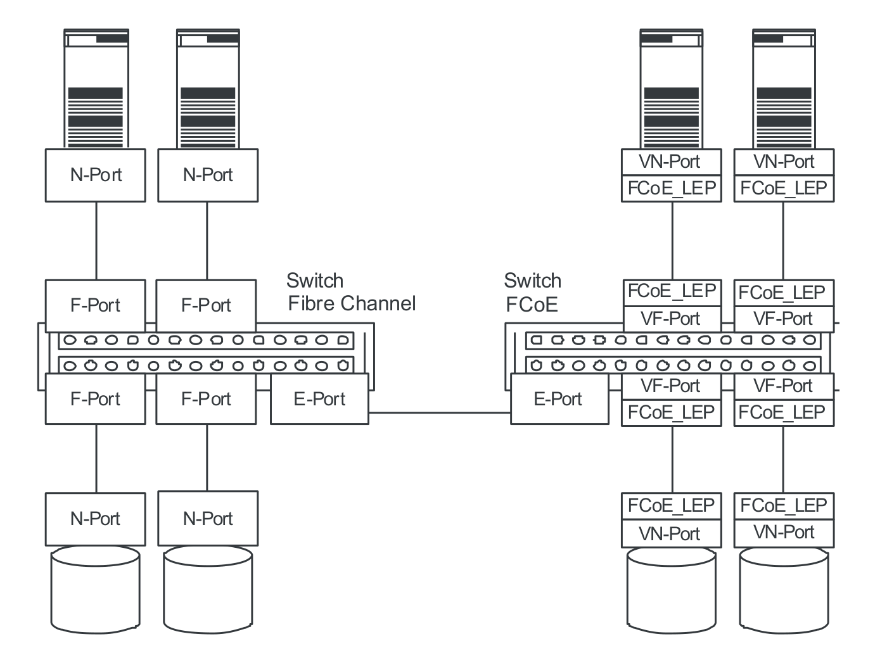
También encaja con servidores blade: cada blade tiene un adaptador de red convergente (CNA) con puertos VN, un switch de capa 2 los agrupa y el switch FCoE da acceso tanto a los discos (FCoE) como a la LAN/TCP.
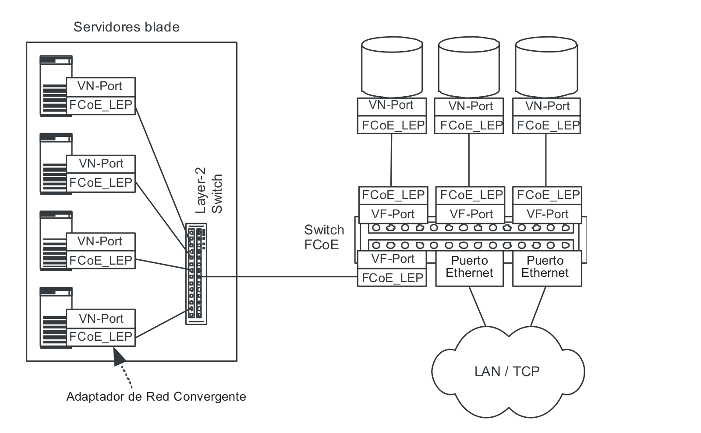
7.7.4 Visión final
Ethernet ha evolucionado mucho, pero sigue perdiendo paquetes cuando hay congestión. TCP lo soluciona, pero FCoE prescinde de TCP, así que se está mejorando Ethernet (DCB) para que sirva a la vez para FCoE, LAN y clústeres. Resultado: FCoE atrae mucho interés, pero no acaba de despegar.
7.8 NVMe over Fabrics (NVMe-oF)
Es el recién llegado: un protocolo para conectar un host con un dispositivo o sistema de almacenamiento de estado sólido (SSD) a través de una red usando NVMe. Los proveedores están desarrollando un ecosistema NVMe-oF completo (SO e hipervisor del servidor, tarjetas de red, SO de almacenamiento y unidades), con varias implementaciones (NVMe-oF-RDMA, etc.).
NVMe es una alternativa a SCSI para conectar hosts con SSDs, y acelera el acceso en varios órdenes de magnitud frente a SAS o SCSI. La diferencia entre NVMe y NVMe-oF está en cómo se envían comandos y respuestas:
- NVMe (local): los mapea usando memoria compartida.
- NVMe-oF: usa un modelo basado en mensajes por la red.
Características: alta velocidad, baja latencia de red, control de flujo por créditos, escala a miles de dispositivos, multi-path (varias rutas simultáneas entre host y almacenamiento) y multi-host (varios hosts y subsistemas enviando y recibiendo comandos a la vez).
Beneficios: baja latencia, muchísimas peticiones en paralelo, más rendimiento general, menos carga del SO en el servidor, mejores arrays de almacenamiento y variedad de implementaciones.
Tres formas de transportarlo:
| Transporte | Cómo es | A favor | En contra |
|---|---|---|---|
| RDMA | Los datos pasan de un espacio de memoria a otro sin invocar al SO ni al procesador | Menor sobrecarga, respuesta en microsegundos | Requiere en la práctica una red de almacenamiento nueva; menos escalable que FC |
| FC | FC admite mapear otros protocolos encima (NVMe, SCSI, FICON) | Acceso a flash NVMe compartida sobre la SAN FC | Se pierde rendimiento al traducir comandos SCSI encapsulados a NVMe |
| TCP/IP | Uno de los avances más recientes: NVMe-oF sobre Ethernet estándar | Reutiliza la infraestructura Ethernet y la inversión ya hecha | — |
Para entenderlo mejor
NVM Express — Wikipedia — sección sobre NVMe over Fabrics y sus transportes (artículo, inglés).
7.x Ideas clave
- Almacenamiento IP: SCSI sobre Ethernet + TCP/IP. Barato, reutiliza la LAN y el personal, sin límite de distancia; pero carga la CPU, mucho overhead, alta latencia y solo 20-30 % del ancho de banda.
- iSCSI: SCSI + cabecera iSCSI + TCP + IP + Ethernet; acceso por bloques; driver SW, NIC iSCSI o HBA iSCSI (pila en HW). Único sin dispositivos FC.
- iFCP: cada puerto FC con una IP; red IP pero HBA FC; complejo.
- FCIP: túnel IP entre SAN FC distantes; encapsulado trivial; da también servicios de red (enrutamiento, name server, zoning).
- Ayudas: TOE/HBA para iSCSI; migrar con gateways, VLAN, NIC dedicada, GbE o más. Solo FC hace cut-through routing.
- InfiniBand: serie full-dúplex, 250 MB/s base, hasta 25 Gbit/s por link (EDR) y 300 Gbit/s con 12X; latencia < 1,5 µs (1 µs con RDMA); HCA/TCA; >50 % del TOP100 (2020).
- VIA: memoria común entre aplicación y NIC sin pasar por el SO; send/receive o RDMA. Derivados: RDMA sobre TCP (RNIC), SDP, iSER, SRP.
- FCoE: FC sobre Ethernet + DCB sin TCP para consolidar redes; frame FC de 2112 B en uno Ethernet de 2180 B; necesita tarjetas y switches FCoE (VN/VF_Port, FCoE_LEP). Interesa pero no despega.
- NVMe-oF: NVMe por red con mensajes (no memoria compartida); créditos, multi-path, multi-host; sobre RDMA, FC o TCP/IP.